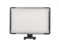

Sonnon DL-913除了具备无线同步调节亮度，还增加了闪光同步模式。
色温控制得不错
亮度可调,而且可以组合起来无线控制.
灯珠数增加,电池使用数量也增加,最好有电源适配器
性价比很高的一支灯，还能闪光同步
够亮够省电，还能闪光同步，而且亮度也能调节，拍taobao很棒
暂时没有发现
网店拍摄小物件的好选择
LED灯珠省电,而且亮度足,可以调节,而且多个凑成一组可以无限控制光的明暗,非常方便
有点大